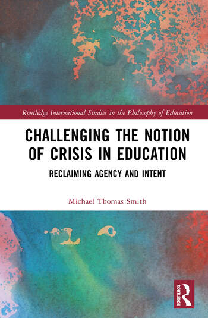

Challenging the Notion of Crisis in Education
Reclaiming Agency and Intent

This book explores the narrative of education being in a state of perpetual crisis and the motivations behind the historical and contemporary tendency to exploit the same.
Written as a call for greater media literacy, the book examines how and when proposed solutions to educational crises fail to address their root causes, ultimately maintaining the status quo.
The book considers how educational crises are often underpinned by a lack of funding, cherry-picking of data, ideological imperatives, the fashioning of public opinion as amorphous, or simple incompetence.
Drawing on international examples from Japan, India, Sweden, Russia, South Korea, and elsewhere, the book offers a solution-centric reorientation of educational debates and argues for skepticism and epistemic humility as foundations for educational decision-making.
Ultimately, the book calls for people to reclaim the agency they have collectively surrendered in the face of educational crisis narratives and to forge a more forward-thinking path.
Michael Thomas Smith
Routledge, 2026